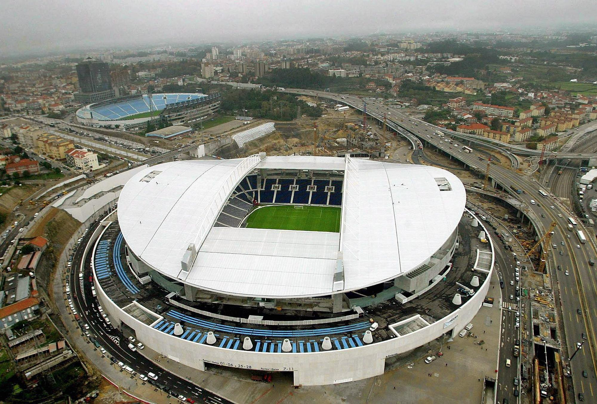

2021 Estadio do Dragão Oporto Portugal

Nombre del estadio: Estadio do Dragão
Ubicación: Oporto, Portugal.
Capacidad: Aproximadamente 50,033 espectadores.
Inauguración: 16 de noviembre de 2003.
Propietario: FC Porto (Futebol Clube do Porto).
Características destacadas:
Diseño moderno: El estadio tiene un diseño vanguardista con una estructura que combina acero y vidrio.
Techado completo: Cubre todas las gradas, protegiendo a los espectadores de las condiciones climáticas.
Sostenibilidad: El estadio cuenta con sistemas de eficiencia energética y gestión de residuos.
Museo del FC Porto: El estadio alberga un museo dedicado a la historia del FC Porto, uno de los clubes más exitosos de Portugal.
Eventos importantes albergados en el Estadio do Dragão
El Estadio do Dragão ha sido sede de numerosos eventos importantes, entre ellos:
Final de la UEFA Champions League 2021: Chelsea vs. Manchester City.
Partidos de la Eurocopa 2004: Fue una de las sedes de este torneo.
Partidos de la Liga de Campeones: El FC Porto ha jugado numerosos partidos de Champions League en este estadio.
Conciertos: Ha albergado conciertos de artistas internacionales como U2 y Coldplay.
Ubicación y cómo llegar
Dirección: Estádio do Dragão, Via Futebol Clube do Porto, 4350-415 Oporto, Portugal.
Transporte público:
Metro (Línea E): Estación Estádio do Dragão.
Autobús: Varias líneas de autobús conectan el estadio con el centro de Oporto.
Tren: Estación de Campanhã, a 10 minutos a pie del estadio.
Acceso en coche: El estadio cuenta con un amplio estacionamiento, pero se recomienda llegar temprano debido a la alta afluencia de público en eventos importantes.
Datos curiosos
El nombre "Dragão" (Dragón) hace referencia al símbolo del FC Porto, que aparece en su escudo.
El estadio fue diseñado por el arquitecto portugués Manuel Salgado.
Fue construido para reemplazar al antiguo Estadio das Antas, que fue demolido en 2004.
El Estadio do Dragão es considerado uno de los estadios más modernos y funcionales de Europa.